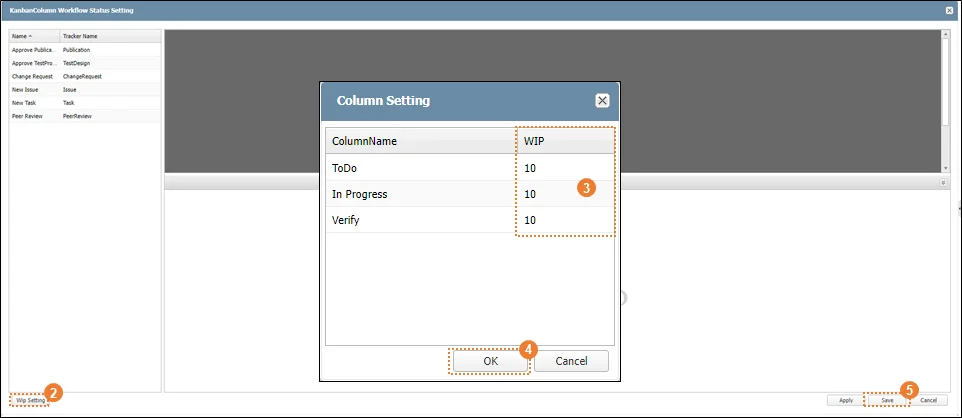
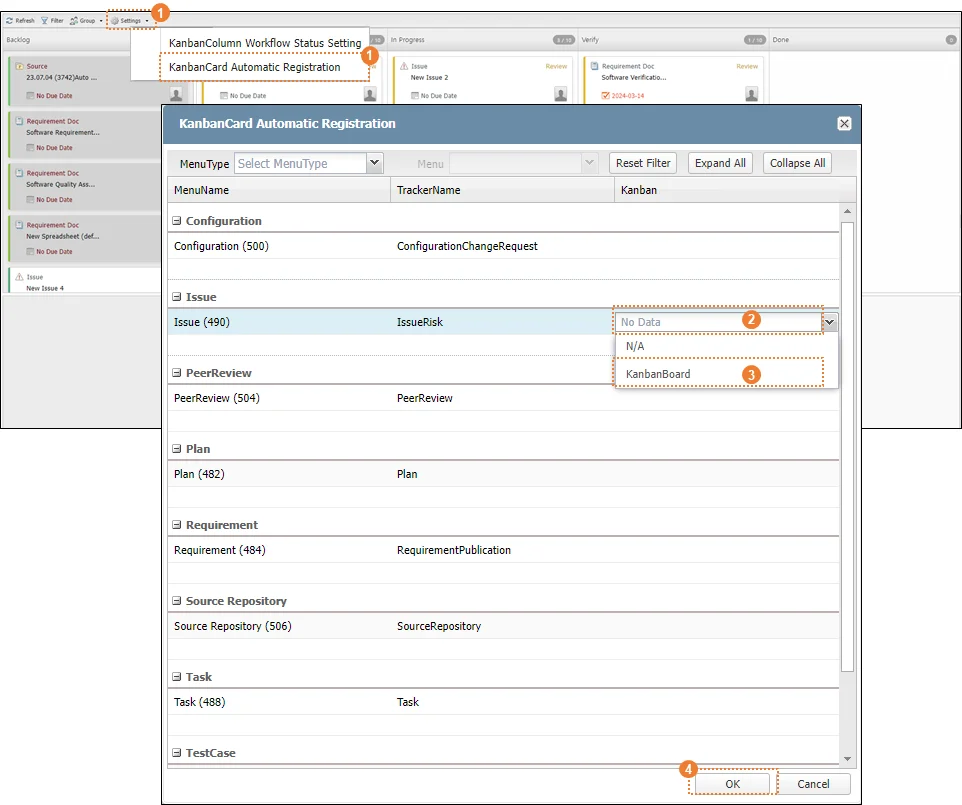
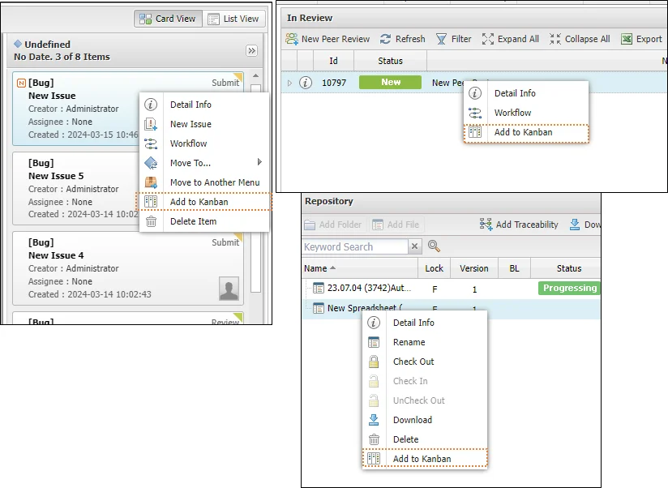
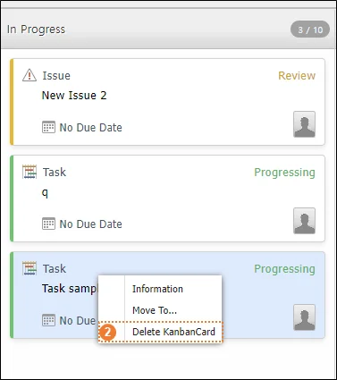
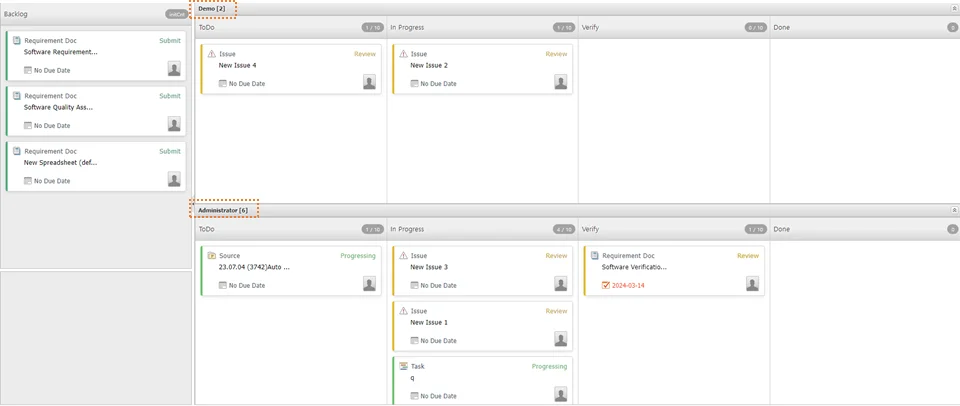

|
SILKROAD 프로젝트별 개인/팀에게 할당된 작업, 관리 데이터를 시각화하여 작업 관리의 효율성을 최대화 할 수 있는 기능이다. 실크로드 Workflow Engine과 연계하여 업무 담당자에게 전자 결제를 직접 할당하고 진행한다. 실크로드 아이템/개인/팀별 필터를 제공하여 효율적인 작업 관리가 가능하다.
|
구분 | 명칭 | 설명 |
| Kanban 기능 메뉴 바 | 화면 새로고침, 필터, 표시 정보 구성 선택, 설정 기능 제공 |
| Backlog 할당 아이템 | Kanban Board 추가 아이템 카드 표시 |
| Status 할당 아이템 | Status에 할당된 아이템 카드 표시 |
| Status 아이템 리스트 | Status별 할당된 아이템 리스트 |
작업 아이템 정보 | 작업 아이템의 메뉴, 이름, Workflow Status 정보 표시 | |
| Due Date | 작업 아이템의 작업 만료일 설정 |
| Prcess Assignee | 작업 아이템 담당자 정보 표시 |
Kanban 메뉴에서 제공하는 칼럼 Status(ToDo, In Progress, Verify, Done)와 실크로드 워크플로우의 진행 단계를 매칭 한다. 매칭을 통해 워크플로우 진행 또는 Kanban 칼럼 Status 변경 시 변경사항을 화면에 반영하게 된다. 실크로드에서 생성하는 아이템은 메뉴(Tracker)별로 독립적인 워크플로우를 가져 대상 메뉴 각각의 워크플로우를 Kanban 칼럼 Status에 설정한다.
① ‘Setting’ 을 클릭한다. 또는 확장 버튼()을 클릭하고 ‘KanbanColumn Workflow Status Setting’ 버튼을 클릭한다.
Kanban Board의 ‘Setting’ 기능은 프로젝트 관리자(Project Manager)에게만 제공되는 기능으로 프로젝트 참여자(Member)에게는 제공하지 않는다. ‘KanbanColumn Workflow Status Setting’ 설정은 실크로드 워크플로우 설정이 먼저 완료된 후 진행 한다. 모든 아이템은 생성 시점의 워크플로우를 기준으로 생성되고 추후 변경 시 반영하지 않는다. 변경된 워크플로우를 반영하기 위해서는 ‘Reset’ 후 다시 ‘Active Workflow’를 진행해야 한다. |
② KanbanColumn Workflow Status Setting 창 왼쪽에 위치한 워크플로우의 메뉴 명과 Tracker 명을 확인하고 대상 워크플로우를 더블클릭 한다.
③ Backlog 칼럼에 위치한 워크플로우의 진행 단계(Status)를 선택하고 드래그 해 해당하는 Kanban Board 칼럼(ToDo, In Progress, Verify, Done)에 추가한다.
④ ‘Save’ 버튼을 클릭해 저장한다. 다른 메뉴 워크플로우를 연이어 설정할 때 ‘Apply’ 버튼을 클릭해 저장하고 설정을 계속한다.
|
Wip(Work-In-Process) 설정을 통해 Kanban 칼럼 Status별 할당할 수 있는 업무의 양을 설정한다. 설정한 업무의 수가 넘어가는 경우 칼럼의 업무 수가 빨간색으로 강조된다.
① ‘Setting’ 을 클릭한다. 또는 확장 버튼()을 클릭하고 ‘KanbanColumn Workflow Status Setting’ 버튼을 클릭한다.
② ‘Wip Setting’ 버튼을 클릭한다.
③ 대상 칼럼의 Wip 영역을 더블클릭해 편집을 활성화 하고 수를 입력한다.
④ ‘OK’ 버튼을 클릭한다.
⑤ ‘Save’ 버튼을 클릭한다.
 |
Kanban Board는 실크로드에 생성한 아이템들 중 대상 아이템을 화면에 추가해 표시한다. 사용자는 아이템별 수동으로 추가할 수 있고, 관리자가 대상 메뉴(Tracker)에서 생성된 아이템을 자동으로 Kanban에 추가하도록 설정할 수 있다.
자동 등록 설정 이후 생성한 아이템은 생성과 동시에 Kanban Board에 등록된다. 설정하기 전 생성된 아이템은 자동 등록에 적용되지 않으므로 수동 등록한다.
① ‘Setting’ 을 클릭한다. 또는 확장 버튼()을 클릭하고 ‘KanbanCard Automatic Registration’ 버튼을 클릭한다.
② ‘KanbanCard Automatic Registration’ 창에서 대상 메뉴의 Kanban 칼럼 영역을 클릭한다.
③ 콤보박스를 이용해 해당 메뉴에서 생성되는 아이템을 등록할 Kanban Board를 지정한다.
④ ‘OK’ 버튼을 클릭한다.
메뉴에서 생성되는 아이템의 종류에 따라 한 메뉴에 여러 Tracker가 존재할 수 있다. 아이템 종류를 확인해 각각의 Kanban Board를 지정한다. |
 |
Kanban Board 등록이 가능한 아이템에 대하여 사용자가 직접 추가한다. 등록 가능한 아이템은 8개 메뉴로 Configuration, Issue, PeerReview, Plan, Requirement, Source Repository, Task, TestCase 이다.
① 실크로드에서 대상 메뉴로 이동한다.
② Kanban에 등록할 작업 아이템을 생성하거나 기존에 생성된 아이템을 우 클릭한다.
③ ‘Add to Kanban’ 을 클릭한다. 정상적으로 등록된 경우 성공 알림이 생성된다.
아이템 자동 등록은 ‘1.2.3 KanbanCard Automatic Registration’ 설정을 이용한다. 설정 이후 대상 메뉴에서 생성하는 아이템을 Kanban Board에 자동 등록한다. Kanban Board에 이미 추가된 아이템은 우 클릭 시 ‘Add to Kanban’기능을 제공하지 않는다. |
 |
Kanban Board에 등록한 아이템을 Kanban 메뉴에서 삭제한다.
① Kanban Board 메뉴에서 칼럼에 등록된 아이템을 우 클릭한다.
② ‘Delete KanbanCard’를 클릭한다.
Kanban 칼럼 Status 중 Done에 위치한 작업 아이템은 실크로드 워크포로우 End 단계에 해당한다. 이 단계의 아이템은 Kanban 메뉴에서 삭제한 뒤 다시 ‘Add to Kanban’을 통해 재등록할 수 없다. Kanban에 등록된 아이템이 작성자 또는 관리자에 의해 삭제(Delete)된 경우, Kanban Board는 화면 Refresh 시 반영한다. Kanban 화면에 아이템 삭제가 반영되지 않은 경우, 해당 아이템 활용(정보창 열기, Workflow 실행) 시 알림 메시지를 생성한다. |
 |
Kanban Board 칼럼 Status은 아이템의 Workflow와 관계가 있다. 사전 설정(1.2.1 KanbanColumn Workflow Status Setting 참조)에 따라 Drag&Drop을 이용해 이동이 허용되고 아이템의 칼럼 이동은 Workflow 진행과 동일한 기능을 한다.
① Backlog 또는 칼럼에 위치한 아이템을 마우스로 클릭해 드래그 한다.
② 사전 설정에 따라 이동 가능한 칼럼에 드롭해 추가한다.
③ ‘Next Process Manager’ 창이 생성되고, 작업을 처리한 담당자(Assignee)를 지정한다.
④ ‘OK’ 버튼을 클릭한다.
Backlog 칼럼에 위치한 아이템 중 비활성화(회색) 처리된 아이템은 칼럼 이동이 불가하다. 원인과 해결방법으로 1) 아이템 Workflow가 Activate 되지 않은 경우 아이템의 ‘Active Workflow’ 하고, 2) 사전 설정(1.2.1 KanbanColumn Workflow Status Setting)이 되어 있지 않은 경우 칼럼과 Workflow 매칭으로 활성화 한다. 같은 Kanban 칼럼에 위치한 작업 아이템 중 동일한 메뉴와 Workflow를 가진 작업 아이템은 여러 개를 동시에 선택해 다른 칼럼으로 이동이 가능하다. |
|
Kanban Board에 등록된 작업 아이템을 사용자가 선택한 그룹 형태(All/User)로 화면에 표시한다. Group – All은 모든 작업 아이템을 칼럼 Status 별로 나열해 표시해 Status별 아이템 현황을 수월하게 파악할 수 있다. Group – Users는 사용자별 칼럼 Status를 표시해 담당자별 진행 업무 현황을 제공한다.
① Kanban 기능 메뉴 바에서 ‘Group’의 확장 버튼 ‘’을 클릭한다.
② ‘Users’ 를 클릭한다.
Group – Users 화면은 First Name[할당된 아이템 수]로 작업 아이템 담당자별 할당된 아이템의 수와 칼럼별 진행 현황을 표시한다. |
 |